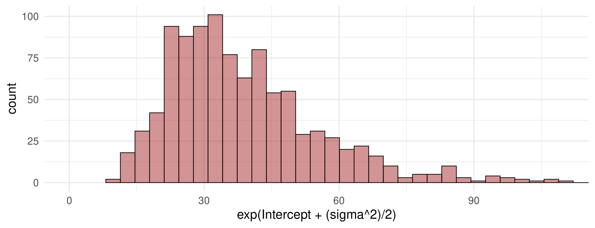
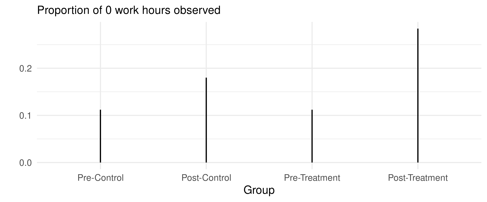

How to use hurdled lognormal likelihood to model outcomes in R?
Author
Suhishan Bhandari
Introduction
While working on a research project, I had to model people’s work hours: the survey asked people to self-report how many hours they spent working in the past 7 days. There are multiple constraints to the seemingly innocent work hours:
It is naturally bounded to be positive.
While people report their answers in integers, the variable seems clearly continuous.
The variable tends to have a clear spike at and around zero. This is because there are multiple causes of economic inactivity such as unemployment, student and pensioner population, voluntary vacations and so on.
The most distinguishing feature of a variable such as work hours is that it arises out of at least two generating processes. It is plausible to assume that there is one process that determines average incidence of observed 0s, and another one that determines average non-zerowork hours. This is precisely what fascinated me about this variable and why I figured that a Bayesian approach, specifically brms ’s hurdle_lognormal model may be better suited for inference.
The Objectives of this article are:
Understand why a hurdle_lognormal likelihood suits the constraints that we have to work with.
Simulate data and model probability of hurdle 0 and average non-zero work hours simultaneously in a single model.
Include covariates and see why modelling the two separate phenomena aids in inference.
Hurdle Lognormal Likelihood
Data Simulation
Let’s look at this with an example. Here, I simulate \(1000\) observations of work hours as a lognormal process with 15% of these values being 0 hours worked.
set.seed(42)N <-1e3#1000 observationsd <-tibble(isZero =rbinom(N, 1, 0.15), #15% 0 observationswh = (1- isZero) *rlnorm(N, 3.5, 0.4)) d %>%ggplot(aes(wh)) +geom_histogram(bins =40, fill ="skyblue2", color ="black")+labs(x ="Work Hours")
In our data simulation, we can see that Work Hours wh is a function of isZero i.e. the probability of seeing zero, and if not \(0\), a log normal process with \(\mu_{log} = 3.5\) and \(\sigma_{log}=0.4\). This results in a variable wh which contains around \(15 \%\) zeros and average non-zero work hours of \(exp(\mu_{log} + \frac{\sigma_{log}^2}{2})\).
mean(d$isZero)
[1] 0.149
# Theoretical mean of non-zero work hours:exp(3.5+ (0.4^2)/2)
[1] 35.87354
# Actual mean of non-zero work hours:mean(d$wh[d$isZero ==0])
[1] 35.20785
Intercept-only model.
model_1 is our first brms model and the parameters of our interest are:
Average Work Hours for people who worked at least 1 hour.
Standard deviation of work hours for people who worked at least 1 hour.
The probability of observing the hurdle i.e. \(0\).
model_1 <-brm(data = d,family = hurdle_lognormal,bf(wh ~1, hu ~1),prior =c(prior(normal(3.5, 0.4), class = Intercept, lb =0),prior(normal(-1.5, 1), dpar ="hu", class = Intercept),prior(exponential(4), class = sigma) ),iter =2e3, warmup =1e3, chains =4, cores =4,sample_prior = T,file ="fits/model_1")
Prior Predictive Simulation
Before we see the results, let’s first look at the prior predictive simulation for average non-zero work hours and the probability of hurdle. Before we look at the data, the model expects average non-zero work hours to be around \(exp(3.5 + \frac{0.25^2}{2}) = 34.16\) hours where the two parameters that define this being the Intercept and sigma(sd) of log(wh).
tibble(Intercept =rnorm(N, 3.5, 0.4),sigma =rexp(N, 4)) %>%ggplot(aes(x =exp(Intercept + (sigma^2)/2)))+geom_histogram(bins =100, fill ="brown", color ="black",alpha =1/2)+coord_cartesian(xlim =c(0, 110))

As for the probability of observing a \(0\), the model expects most of the probability mass around mean(inv_logit_scale(rnorm(N, -1, 1))) = \(0.21\) i.e \(21\%\).
tibble(o =rnorm(N, -1.5, 1),probs =inv_logit_scaled(o)) %>%ggplot(aes(x = probs))+geom_histogram(bins =50, fill ="brown", color ="black",alpha =1/2)
As expected, the model’s results matches closely with the sample average work hours of around \(35\) hours and the \(15%\) probability of observing a \(0\). However, this is different to a standard OLS result, where the separation of both phenomena require two separate models and two separate regressions.
# Overall OLSlm(wh ~1, data = d)[1]
$coefficients
(Intercept)
29.96188
# only for non-zero work Hourslm(wh ~1, data = d[d$wh >0,])[1]
$coefficients
(Intercept)
35.20785
# probability of zero.glm(isZero ~1, data = d, family=binomial(link ="logit"))[1]
$coefficients
(Intercept)
-1.742466
Group-Wise Interaction Effect.
The intercept-only model is useful for estimating simple average parameters, but more often than not, we want to see differences in outcomes that arise out of differences in predictors. One such instance is the conventional two-way interaction model where the average for outcome depends upon the joint value of two predictors. For example, let’s assume two adjacent districts A and B : A was relatively untouched by the foils of some civil war while district B was heavily affected with high number of casualties. If the conflict lasted for a year at time \(t\), let’s assume we have a randomly sampled cross-section of \(250\) people each in time \((t-1)\) i.e. before the conflict, and similarly random cross-section of \(250\) people each after the conflict at time period \((t+1)\). We want to see the effect of war on the probability of working \(0\) hours, the hurdle, and the effect on hours worked. This scenario resembles the conventional Difference-in-difference scenario.
Let’s perform a generative simulation for the afore-mentioned repeated cross-sectional data:
set.seed(44)a_0 <-3.7a_post <--0.05a_treat <--0.05a_pt <--0.2g <-tibble(post =rep(c(0, 1), each =500), # time period 0 is before and time period 1 is after.treat =rep(c(0, 1), times =500 ), # 0 is no-war, 1 is war.isZero =rbinom(N, 1, prob =0.1+0.1* post +#0.07 because of temporary immigration (0.01) * treat +0.1* (post * treat)),wh = (1- isZero) *rlnorm(N, a_0 + a_post * post + a_treat * treat + a_pt * (post * treat),sdlog =0.4))
We can categorize \(post = {0, 1}\) and \(treat = {0, 1}\) jointly in terms of four interaction groups:
Value
Group
Description
1
\(post = 0\) and \(treat = 0\)
Pre-Control
2
\(post = 1\) and \(treat = 0\)
Post-Control
3
\(post = 0\) and \(treat = 1\)
Pre-Treatment
4
\(post = 1\) and \(treat = 1\)
Post-Treatment
g <- g %>%mutate(group =factor(1+ post +2* treat, labels =c("Pre-Control", "Post-Control","Pre-Treatment","Post-Treatment")))
Let’s look at what we simulated:
g %>%group_by(group) %>%summarize(avg_wh =mean(wh)) %>%ggplot(aes(x = group, y = avg_wh))+geom_linerange(aes(ymin =0, ymax = avg_wh),color ="black",linewidth =1)+labs(subtitle ="Average non-zero work hours by group", y ="",x ="Groups")
g %>%group_by(group) %>%summarize(avg_isZero =mean(isZero)) %>%ggplot(aes(x = group, y = avg_isZero))+geom_linerange(aes(ymin =0, ymax = avg_isZero),color ="black",linewidth =1)+labs(subtitle ="Proportion of 0 work hours observed", y ="",x ="Group")

Average work hours is simulated to be lower post-war for district B (the treatment district). However, the probability of working \(0\) hours, while high for post-war district, is also relatively high for post-control district as well. The logic for this is my DGP assumption that workers from war-afflicted districts migrated to district A and as such, the post-control cross-section sees a lot of people looking for work and therefore \(0\) hours worked. The data is also generated in this manner to hammer home the fact that work hours incorporates two simultaneous processes, and modelling each of them separately yields accurate inferences.
Single Phenomena OLS Model
The expected difference-in-difference contrast in non-zero work hours is close to \(8\) hours as per the generative model.
# A function to turn E(log(x)) to E(x)log_to_og <-function(log_mean, sigma) {return (exp(log_mean + (sigma^2)/2))}# Expected DiD Contrast in Work Hourslog_to_og(3.7, 0.4) -log_to_og(3.7+ a_pt, 0.4)
[1] 7.942501
However, if we estimate the did coefficient using simple OLS, the result does not match with the expected difference (barring simulation variance) as can be seen from the results below.
# A normal OLS model.ols_group <-lm(wh ~1+ post + treat + post*treat, data = g)summary(ols_group)
Call:
lm(formula = wh ~ 1 + post + treat + post * treat, data = g)
Residuals:
Min 1Q Median 3Q Max
-38.153 -12.375 0.284 11.579 82.434
Coefficients:
Estimate Std. Error t value Pr(>|t|)
(Intercept) 38.153 1.312 29.076 < 2e-16 ***
post -3.956 1.856 -2.132 0.033285 *
treat -1.436 1.856 -0.774 0.439362
post:treat -9.694 2.624 -3.694 0.000233 ***
---
Signif. codes: 0 '***' 0.001 '**' 0.01 '*' 0.05 '.' 0.1 ' ' 1
Residual standard error: 20.75 on 996 degrees of freedom
Multiple R-squared: 0.0757, Adjusted R-squared: 0.07292
F-statistic: 27.19 on 3 and 996 DF, p-value: < 2.2e-16
While OLS correctly estimates war’s negative effect on average work hours, the magnitude is overblown : the estimate from the OLS is \(-10\) hours, while the expected difference should be close to \(-8\) hours. The reasons for this are:
The magnitude of the effect post:treat is an overall effect of total \(0\)s and non-zero work hours. Similarly, the negative work hours in the post-control (here post hours) is largely driven by the large numbers of zeros observed in that group.
To model the probability of observing zeros, we have write and interpret a separate model.
While beyond the scope of this paper, it can be true that the probability of observing higher zeros and reduced work hours are not independent, and thus this could be modelled in a Bayesian framework, which is better than modelling both events separately.
Group wise interaction brms model.
Instead of modelling both phenomena separately, we can use a hurdle_lognormal model to make our calculations and inference easy. The only aspect changed in model_2 is that we have now incorporated group into our brms formula, which means we will have four different parameters for average non-zero work hours for each group, and four different hurdle parameters.
model_2 <-brm(data = g,family = hurdle_lognormal,bf(wh ~0+ group, hu ~0+ group),prior =c(prior(normal(3, 0.5), class = b, lb =0),prior(normal(-1, 1), dpar ="hu", class = b),prior(exponential(4), class = sigma) ),sample_prior = T,iter =2000, warmup =1000, chains =4, cores =4,file ="fits/model_2")post <-as_draws_df(model_2)
In a similar vein, the same model also handily provides us the did contrast for observing a hurdle i.e. \(0\).
The overall lesson that we gather is that we are able to compute the did contrast for both work hours and the probability of \(0\) in a single model using a Bayesian hurdle_lognormal model. The model allows us to bake in the natural constraints (positivity constraint, zero-inflation) using apt distributions for likelihood, and at the same time, allows us to model the dual-phenomena of zero observations and average non-zero observations in the same model. If one so chooses, we can include separate covariates for hurdle (hu) and wh instead of the single group interaction that I chose if such a necessity arises.